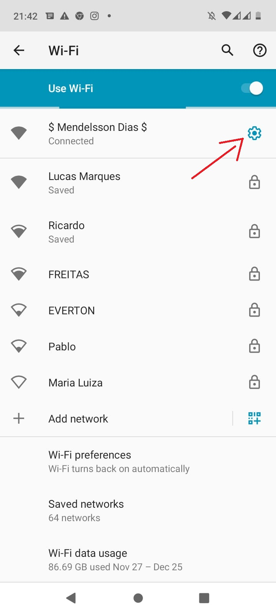
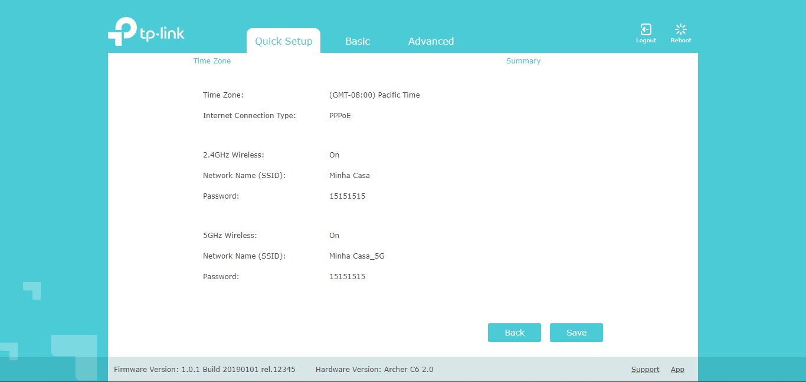

O primeiro passo é acessar o roteador
Recomendamos que você resete o roteador antes de iniciar a configuração. O roteadores são fabricados
com um pequeno botão na parte traseira dos aparelhos, ou um pequeno orifício, aplique ou aperte o
botão até as luzes do roteador apagarem e acenderem novamente. Após realizar este procedimento, o
nome do Wi-fi será o nome do modelo do seu roteador, e geralmente a senha para se conectar a essa
rede, fica embaixo do dispositivo.
Você pode acessar um roteador de duas maneiras, via Wi-fi e via cabo. Na primeira você precisa se
conectar no wifi do roteador. Ao se conectar, acesse as configurações da rede, que é o icone de
engrenagem ao lado do nome da rede Wi-fi. Ao acessar, procure pelo Gateway deste roteador, copie o
IP do Gateway e cole no navegador Web para acessar. Lembrando que aqui estaríamos realizando o
procedimento de um dispositivo móvel.

Acessando o roteador
Ao acessar o roteador, ele abrirá nesta página. Logo após você fazer o login, com a senha, que
sempre fica embaixo do roteador. Ele abrirá nesta página, que é o modo de configuração rápida do
roteador. Nesta etapa aperte Next.

Colocar PPOE e SENHA do seu Provedor de Internet
Nesta etapa, selecione o tipo de conexão, que na maioria dos casos, é o PPOE do seu provedor.
Você precisará entrar em contato com eles, para que possam passar essas informações. Pois é com
o usuário e senha PPOE que o seu roteador irá se conectar. Selecione PPOE e aperte Next.

Coloque PPOE e senha
Aqui nesta etapa, é necessário entrar em contato com o seu provedor de internet, para eles passarem
o PPOE e senha, nos casos desse tipo de conexão, que na maioria dos casos são. Após colocar o PPOE e
senha fornecidas pelo seu provedor, aperte em Next.

Configurar nome de rede Wi-fi e senha
Aqui chegou a hora de configurar sua senha e nome da rede Wi-fi, conhecida também como SSID.
Neste modelo, nós temos a tecnologia 5G, que não explicaremos neste artigo, mas só procurar em
nosso site que achará a respeito. Então é necessário configurar das duas redes, você pode
colocar uma senha e nome diferente para a rede 5G, fica a seu critério. Certifique-se que as
duas redes estarão ativadas, que neste modelo é o "Enable Wireless Radio", lembre-se de marcar
esta caixa.

Após configurar nome de rede Wi-fi e senha
Ficará desta maneira, após colocar as informações de nome e senha do Wi-fi. Aperte Next, para prosseguir com a configuração.

Parabéns você configurou seu roteador !
Prontinho, aqui você configurou seu roteador, para finalizar, aperte save, e novamente em contato com o seu provedor, peça para eles limparem o MAC, que é necessário após configurar novamente o dispositivo ou pela primeira vez. Este é o ultimo passo, mas não menos importante, se não sem limpar o MAC, você permanecerá sem internet.

Após configurar seu roteador, ao voltar ele para a tomada novamente, lembre-se de conectar os cabos corretamente.
Espero que este conteúdo tenha te ajudado, divulgue para os seus amigos e companheiros de trabalho, para que nosso trabalho possa alcançar mais pessoas interessadas no assunto. Muito obrigado, até a próxima !!